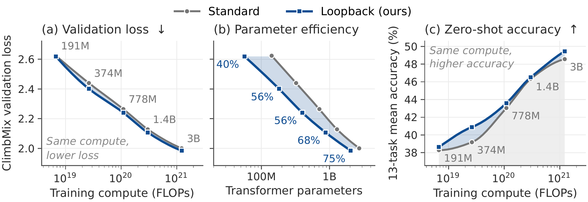
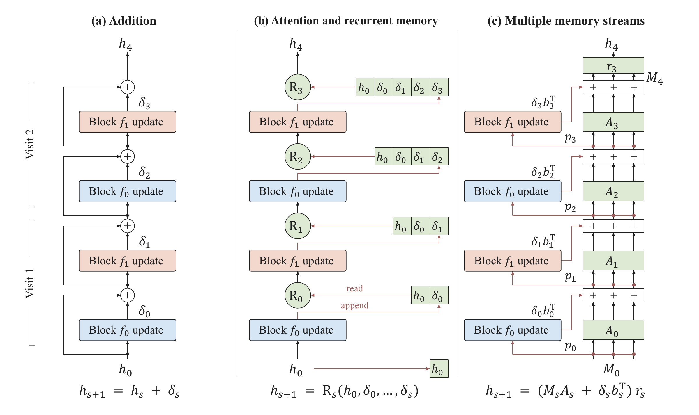
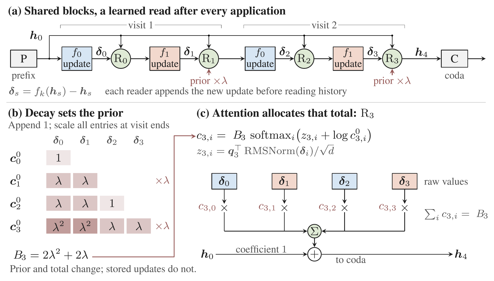
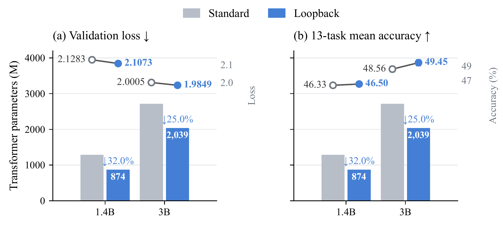
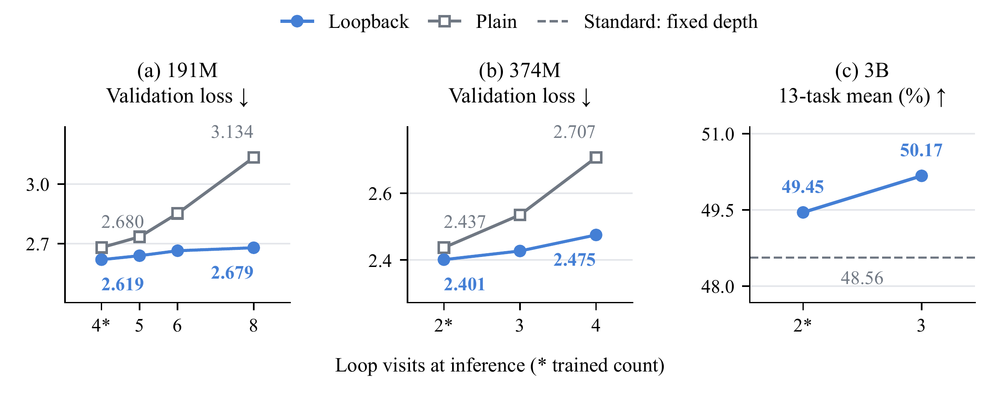
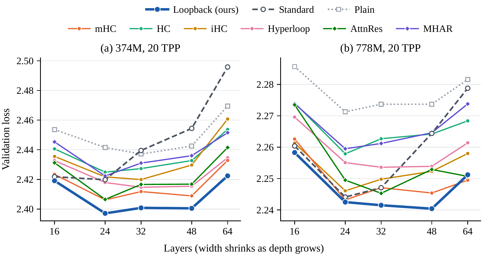
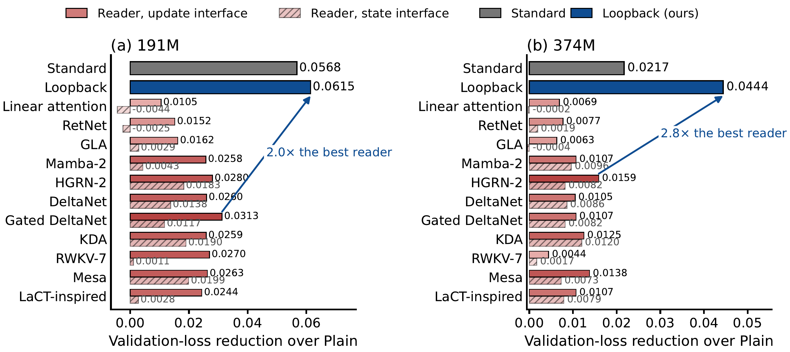
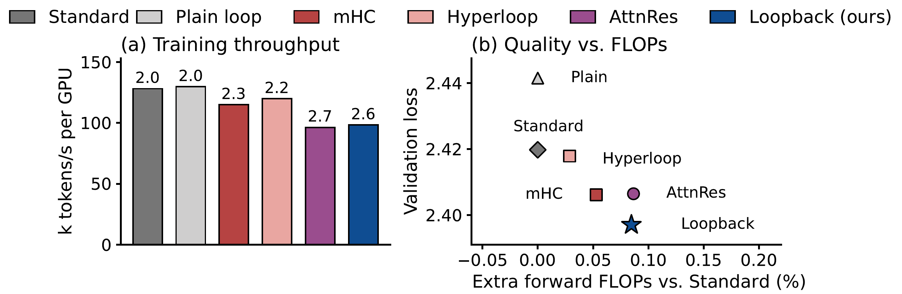

1University of Wisconsin–Madison2University of California, Santa Barbara3California Institute of Technology4Microsoft
(*Equal contribution, ✉Corresponding author)
Papersoon
Codesoon
Loopback in 96 seconds. Why sharing weights leaves update reuse open, three ways a loop can reuse its updates, the recipe, the results from 191M to 3B, extra loops at inference, and what the read costs.
Performance overview
At the same training tokens and executed depth, Loopback reaches lower validation loss than the standard Transformer from 191M to 3B, with 40–75% of its Transformer parameters.
Figure 1 · Matched compute, 191M to 3B

Lower loss and higher accuracy at the same compute, with fewer parameters. Each pair trains on 20 tokens per parameter of the reference scale (20 TPP; 3.82B tokens at 191M) at the same executed depth, so training compute matches. (a) Validation loss and (c) thirteen-task mean accuracy against training FLOPs; (b) the same losses against Transformer parameters, where percentages give Loopback’s share of the standard Transformer’s. 374M and 778M are the 32- and 48-layer shapes of Table 1. Lines interpolate the points; no scaling law is fitted.
Figure 2 · Training loss, five scales
Loopback trains below the standard Transformer at every scale. 100-step moving averages against tokens seen; insets show the last quarter of training, and Δ is the final training-loss difference over the last 100 steps. Loopback stores 40–75% of the standard Transformer’s Transformer parameters.
Abstract
Looped Transformers reduce parameter count by repeatedly applying shared blocks, but parameter sharing alone does not determine how the results of repeated computation are reused. Building on the depth-memory view of residual connections, we analyze how the choice of stored representations and their weighting shapes the reuse of computation across depth. A block’s full output contains both its input and its new update, so weighting that output also reweights the history already carried by the input. Reading individual updates while keeping the shared stack’s input on a separate path exposes distinct controls over input strength, total update weight, and allocation across updates. Guided by this analysis, we develop the Loopback Transformer, which stores individual block updates and keeps the shared stack’s input on a separate path. Geometric decay controls total update weight and supplies a recency prior, while attention learns how to allocate that weight. On ClimbMix, Loopback achieves lower validation loss than standard Transformer baselines using approximately 40–75% of their Transformer parameters across reference scales from 191M to 3B, with training tokens and executed depth matched. It also achieves higher mean accuracy across thirteen downstream tasks at 1.4B and 3B. At 191M, 374M, and 778M, it achieves the lowest validation loss and highest thirteen-task mean accuracy against the standard Transformer baseline and seven looped residual designs.
Key contributions
Residual designs as depth memory
Linear attention and related recurrent models supply memory-update rules that carry over from token sequences to network depth. Read this way, every residual design writes, retains and reads a depth memory, which shows what each block writes and how its contribution is kept. It also exposes two couplings: weighting a full block output reweights its input, and a joint softmax makes the input and the updates compete for one unit of weight.
Store updates, keep the input on its own path
Loopback appends each block’s update rather than its output, so the input is never written back, and it reads the shared stack’s input at coefficient one, so a softmax never shrinks it.
Decay sets the total, attention allocates it
A factor λ at every visit end sets a recency prior whose total is bounded by Kλ/(1−λ); a destination query redistributes that total. Zero queries give the decay-only loop.
Fewer parameters, lower loss
Against standard Transformers of the same executed depth and token budget, Loopback reaches lower validation loss from 191M to 3B with 40–75% of their Transformer parameters, and the lowest loss and highest thirteen-task mean of nine models at 191M, 374M and 778M.
Method
From residual addition to a controllable read
Three moves separate the controls that ordinary addition ties together: what is stored, how the input is carried, and how the stored weight is set and allocated.
One interface for residual rules
Addition, Attention Residuals, Hyper-Connections, mHC, Hyperloop and recurrent depth readers all write a value, carry old memory forward, and read it to form the next hidden state. Unrolling the interface gives every earlier update an explicit coefficient, which exposes two couplings: storing a full block output also rewrites the input it contains, and a joint softmax over the input and the updates ties their weights to a single unit.
Store updates, keep the input on its own path, set the total with decay
Loopback appends each block's update δ rather than its output and keeps the shared stack's input at coefficient one. At every visit end a geometric factor λ shrinks all stored weights, so the prior favors recent visits and the total update weight stays bounded by Kλ/(1−λ).
Attention allocates the total
A destination query scores the normalized updates and redistributes the decay-set total across them. Zero queries recover the decay-only loop exactly; λ = 1 with zero queries recovers ordinary addition. A fused Triton kernel streams the stored updates once per read.
Figure 3 · Three residual pathways

Same shared blocks, three residual pathways. Repeated colors mark shared blocks emitting net updates. (a) Ordinary addition. (b) A reader Rs aggregates the input and the updates computed so far, from an explicit history or a fixed-size recurrent memory; Loopback is an explicit-history reader that keeps the input on its own path and lets decay set the total weight that attention allocates. (c) Multiple streams with an input read, transport, a write and a final readout, as in the hyper-connection family.
Figure 4 · Loopback on a two-visit loop

Loopback separates input, decay and allocation. (a) Shared blocks with a causal history read after every application. (b) Visit-end decay sets the prior and the total weight. (c) Attention redistributes that total over the raw updates, keeping the input coefficient at one.
Interactive
One token through the loop
Press play. The hidden state circles the shared blocks; each application appends the block's update to the history, and the reader forms the next state from the input and the stored updates. At every visit end the decay multiplies all stored weights by λ; attention reallocates that total, and the input keeps coefficient one throughout.
Swipe sideways to see the whole loop.
shared block (even)shared block (odd)readerprefix, coda, inputread coefficient (lighter = smaller)read weight (thread width)prior that attention moved
The same history under three residual rules
ruleinput coefficienttotal update weightinput + updates, to the scale of addition at the last read
With zero queries the cards show the decay prior itself (the decay-only loop); with λ = 1 and zero queries every card has weight one, which is ordinary addition. Attention moves weight between visits (the dashed outline marks the prior it moved from) but never changes the total Bs, bounded by Kλ/(1−λ), or the input coefficient.
Results
Scale names give the standard Transformer’s total parameters, and every model trains on ClimbMix at 20 tokens per parameter of that count (20 TPP) under a warmup–stable–decay schedule. Every comparison within a scale matches the training tokens and the executed depth: the looped arms share one topology, and the standard Transformer keeps the same number of block applications. Validation loss is next-token cross-entropy on a held-out ClimbMix shard packed as in training. Downstream accuracy is zero-shot on thirteen tasks with the lm-evaluation-harness, every prompt starting with the beginning-of-sequence token as in training, plus WikiText word perplexity. Transformer parameters exclude embeddings and the vocabulary head; shared weights are counted once.
40–75% of the parametersTransformer parameters of Loopback against the standard Transformer: 56.65 vs 141.59M at 191M, 2,038.58 vs 2,718.06M at 3B
Lower loss at all five scalesClimbMix validation loss against the standard Transformer: −0.005, −0.039, −0.024, −0.021, −0.016 at 191M, 374M, 778M, 1.4B and 3B
+0.17 to +1.71 pointsthirteen-task zero-shot mean against the standard Transformer: 38.64 vs 38.28, 40.89 vs 39.18, 43.58 vs 43.04, 46.50 vs 46.33, 49.45 vs 48.56
Best of nine modelslowest loss and highest thirteen-task mean at 191M, 374M and 778M, against the standard Transformer, the plain loop, mHC, HC, iHC, Hyperloop, MHAR and Attention Residuals
Table 1: main results. Validation loss, thirteen zero-shot tasks and WikiText perplexity for the standard Transformer and eight residual rules at 191M, 374M and 778M, and for the standard Transformer and Loopback at 1.4B and 3B. The interactive table needs JavaScript.
Configuration at each scale
The shapes of Table 1: 374M and 778M are the 32- and 48-layer shapes of the depth sweep. Blocks and heads apply to the standard Transformer and to every looped arm; head width is 64 throughout. Sequences per optimizer step are at 4,096 tokens on 8 ranks. Peak learning rates are standard Transformer / looped arms.
Scale
Width
Blocks
Heads
SwiGLU
Loopback topology
Seq./step
Steps
Tokens
LR (×10−3)
191M
768
20
12
2,048
[2 → 4×4 → 2]
128
7,280
3.82B
1 / 3
374M
896
32
14
2,560
[2 → 14×2 → 2]
256
7,120
7.47B
2 / 2
778M
1,088
48
17
3,072
[3 → 21×2 → 3]
512
7,440
15.60B
1 / 1.5
1.4B
2,048
25
32
5,632
[3 → 8×2 → 6]
960
7,200
28.31B
1 / 1.5
3B
3,072
24
48
8,192
[6 → 6×2 → 6]
1,920
7,600
59.77B
1 / 1
Larger scale
1.4B and 3B
At 1.4B and 3B, Loopback uses [3 → 8×2 → 6] and [6 → 6×2 → 6], matching the standard Transformer’s 25 and 24 executed layers with 68% and 75% of its Transformer parameters. The same 20-TPP checkpoints are evaluated on general benchmarks, on mathematical and code tasks, and with one additional loop visit at inference.
Figure 5 · General benchmarks at 1.4B and 3B

Fewer parameters, lower loss and a higher thirteen-task mean at 1.4B and 3B. Loopback uses 32% and 25% fewer Transformer parameters. Bars use the left parameter axis; connected points use the right metric axis; 3B error bars show one bootstrap standard error. Training tokens and executed depth are matched within each scale, with one run per arm at 20 TPP. Loopback also has lower WikiText perplexity, 20.29 against 21.09 at 1.4B and 16.74 against 17.28 at 3B. Individual tasks are mixed: Loopback is ahead on nine and eleven of the thirteen, and Table 1 lists every task.
Code and mathematics
Code and mathematical evaluation
Reference-solution loss on GSM8K, MATH-500, HumanEval and MBPP measures how well a model predicts a worked solution given the problem, and five-shot numeric-answer accuracy on six word-problem sets checks final answers. At matched training tokens and executed depth, Loopback has lower solution loss on all four datasets at both large scales, and at 3B its word-problem accuracy rises from 2.6% to 6.4%. In the nine-design comparisons at 191M and 374M, Loopback also has the lowest four-set mean.
Mathematical and code evaluation at 1.4B and 3B
Reference-solution loss is teacher-forced loss in nats per solution token (lower is better), not generation or code-execution accuracy. Word problems give the mean five-shot numeric-answer accuracy over six sets. Δ is Loopback minus Standard, in nats for loss and percentage points for accuracy; green favors Loopback. Training tokens and depth are matched, with one run per arm.
Reference-solution loss
1.4B
3B
Standard
Loopback
Δ
Standard
Loopback
Δ
GSM8K
1.275
1.227
−0.048
1.143
1.086
−0.057
MATH-500
1.421
1.391
−0.030
1.289
1.259
−0.030
HumanEval
1.065
1.035
−0.030
0.906
0.868
−0.038
MBPP
1.282
1.235
−0.047
1.104
1.078
−0.026
Four-set mean
1.261
1.222
−0.039
1.110
1.073
−0.037
Word problems (%) ↑
2.0
2.6
+0.6
2.6
6.4
+3.8
All nine designs at 191M and 374M
Teacher-forced reference-solution loss in nats per token for the 191M models and the 374M 32-layer models of Table 1. Paired bootstrap standard errors of the differences between rules are at most 0.003 on the mean. Underlined: lowest loss in each row.
Reference solutions
Standard
Plain
mHC
HC
iHC
Hyperloop
MHAR
AttnRes
Loopback
191M, 20 layers
GSM8K
1.822
1.865
1.795
1.801
1.826
1.833
1.826
1.797
1.768
MATH-500
1.967
2.028
1.961
1.999
2.023
2.024
1.994
1.962
1.972
HumanEval
1.827
1.935
1.861
1.900
1.924
1.905
1.897
1.895
1.842
MBPP
2.021
2.118
2.028
2.042
2.081
2.074
2.076
2.064
2.018
Mean
1.909
1.987
1.911
1.935
1.964
1.959
1.948
1.929
1.900
374M, 32 layers
GSM8K
1.600
1.612
1.564
1.596
1.554
1.552
1.592
1.563
1.529
MATH-500
1.755
1.755
1.740
1.747
1.728
1.737
1.746
1.734
1.707
HumanEval
1.518
1.520
1.487
1.514
1.495
1.493
1.503
1.481
1.447
MBPP
1.690
1.707
1.664
1.684
1.661
1.680
1.691
1.675
1.643
Mean
1.641
1.648
1.614
1.635
1.610
1.615
1.633
1.613
1.582
Extra visits
Robustness to additional visits
Shared weights allow extra visits at inference, but too much recurrence can degrade predictions, a problem known as overthinking. Without retraining, and with the extra destinations reusing the last trained visit’s queries, Loopback’s loss rises less than the plain loop’s at every tested count, up to twice the trained count. At eight visits the 191M loss rises by 0.060 for Loopback against 0.454 for the plain loop; at four visits the 374M increases are 0.074 against 0.270. At 3B, one extra visit raises Loopback’s thirteen-task mean from 49.45% to 50.17%.
Figure 6 · Extra loop visits at inference

Run past its trained visit count, Loopback degrades far less than the plain loop. (a–b) Validation loss in nats per token; (c) thirteen-task mean accuracy. Asterisks mark trained visit counts; the dashed line is the fixed-depth standard Transformer at 3B, where the plain loop was not evaluated. Axis ranges differ across panels.
Ablations
Decay, attention and initialization
Decay controls the accumulated update weight, and attention allocates it by content. The complete design has the lowest loss at both scales: removing attention raises loss by 0.0033 and 0.0028 nats at 191M and 374M, and removing decay raises it by 0.0434 and 0.0337. Under three weight initializations at both scales, with learning rates held fixed, Loopback stays below the standard Transformer and the plain loop in all six settings and has the lowest loss in five.
Decay and attention at two scales
Validation loss. Fixed allocation uses zero queries; the last row is the standard Transformer at the same depth and tokens. 374M is the 24-layer shape.
Decay
Allocation
191M
374M, 24 layers
off (λ = 1)
fixed (plain loop)
2.6802
2.4415
off (λ = 1)
learned
2.6621
2.4308
on (λ = 1/4)
fixed
2.6220
2.3999
on (λ = 1/4)
learned (Loopback)
2.6187
2.3971
Standard
same depth and tokens
2.6234
2.4198
Weight initialization at 191M and 374M
Validation loss under three initializations, with learning rates held fixed; mHC is the closest looped baseline of Table 1. N(0, 0.022) draws linear and embedding weights at a fixed scale; GPT-2 also scales attention-output and MLP down-projections by 1/√(2D), with D the executed depth; PyTorch uses Kaiming-uniform linear weights and N(0, 1) embeddings. Hyperloop reports that its advantage over the standard Transformer does not survive GPT-2 initialization with retuned learning rates, which motivates this check. The green number under each Loopback loss is its difference from the standard Transformer.
Model
Params (M)
N(0, 0.022)
GPT-2
PyTorch
191M, 20 layers
Standard
141.59
2.6234
2.6419
2.7145
Plain loop
56.64
2.6802
2.6977
2.6642
mHC
56.93
2.6250
2.6408
2.6278
Loopback
56.65
2.6187 −0.0047
2.6178 −0.0241
2.6138 −0.1007
374M, 24 layers
Standard
308.33
2.4198
2.4252
2.4296
Plain loop
179.86
2.4415
2.4272
2.4334
mHC
180.06
2.4062
2.4091
2.4093
Loopback
179.88
2.3971 −0.0227
2.4117 −0.0135
2.3938 −0.0358
Depth
Depth at fixed parameters
At 374M and 778M, every configuration trains from scratch with the training tokens and total parameters held fixed while width is traded for depth from 16 to 64 layers; looped rules keep two visits. The standard Transformer loses ground as it gets deeper and narrower: it is best at 24 layers and, at 64, is 0.076 worse at 374M and 0.035 worse at 778M. Among the looped rules, Loopback is lowest at nine of the ten points, and its optimum moves from 24 layers at 374M to 48 at 778M; its margin over the standard Transformer grows with depth, from 0.003 to 0.073 at 374M and from 0.002 to 0.028 at 778M.
Figure 7 · Depth at fixed parameters

Depth at fixed parameters. ClimbMix validation loss after 20 TPP as each scale trades width for depth at fixed total parameters and tokens. Looped rules make two visits through a shared stack that stores 56–58% of the standard Transformer’s Transformer parameters.
Depth-memory readers
Linear attention and recurrent memory as loop readers
Nine recurrent cores, Mesa and a LaCT-inspired reader are adapted to read the loop’s history at visit boundaries, leaving token attention unchanged. Each reads either cumulative visit states or whole-visit updates, and both interfaces start as the plain loop. Reading updates gives the lower validation loss in all 22 family–scale comparisons, and every update reader improves on the plain loop, but the best still trail Loopback by 0.0302 nats at 191M and 0.0285 at 374M. Fixed-state recurrent cores remain attractive for longer loops: they take each new write without rereading the history, in a state that does not grow with the visit count.
Figure 8 · Eleven depth-memory readers

Reading updates beats reading states, and no reader reaches Loopback. ClimbMix validation-loss reduction over the plain loop at (a) 191M and (b) 374M with 24 layers, for the update interface (solid) and the state interface (hatched) of each reader: linear attention, RetNet, GLA, Mamba-2, HGRN-2, DeltaNet, Gated DeltaNet, KDA, RWKV-7, Mesa and a LaCT-inspired reader. The standard Transformer and Loopback are references.
All eleven readers at two scales
ClimbMix validation loss with matched machine and budget within each scale. Updates and states use one and eight heads, respectively, with different output blends. Underlined: best reader in each column.
Reader
191M, updates
191M, states
374M (24 layers), updates
374M (24 layers), states
Gated DeltaNet
2.6489
2.6685
2.4308
2.4333
HGRN-2
2.6522
2.6619
2.4256
2.4333
RWKV-7
2.6532
2.6791
2.4371
2.4398
Mesa
2.6539
2.6603
2.4277
2.4342
DeltaNet
2.6542
2.6664
2.4310
2.4329
KDA
2.6543
2.6612
2.4290
2.4295
Mamba-2
2.6544
2.6759
2.4308
2.4319
LaCT-inspired
2.6558
2.6774
2.4308
2.4336
GLA
2.6640
2.6773
2.4352
2.4419
RetNet
2.6650
2.6827
2.4338
2.4396
Linear attention
2.6697
2.6846
2.4346
2.4417
Reference models
Plain loop
2.6802
2.4415
Standard
2.6234
2.4198
Loopback
2.6187
2.3971
Efficiency
Compute, throughput and memory
At matched executed depth, Loopback adds only 0.04–0.08% forward FLOPs: the extra operations normalize and score the stored updates, form their weighted sum, and apply decay and mixture replacement, with no Q/K/V projections or extra block evaluations. The fused implementation keeps the training-throughput gap to the standard Transformer at 6% at 3B, on the same eight H100 GPUs with the same batch layout. The KV cache is the standard Transformer’s, and the stored weights are smaller.
+0.04–0.08% FLOPsforward FLOPs added by the read at matched executed depth: +0.08% at 191M and 374M, +0.04% at 778M (24 layers)
6% throughput gap at 3Btraining throughput of the fused implementation against the standard Transformer, on the same eight H100s with the same batch layout
23–44% less weight memorybf16 weights including embeddings: 0.20 vs 0.36 GiB at 191M, 4.16 vs 5.43 GiB at 3B
Same KV cacheexecuted depth and heads are the standard Transformer’s, so the cache per 4,096-token sequence matches: 240 MiB at 191M to 1,152 MiB at 3B
Table 2: compute and efficiency. Parameters, extra FLOPs, training throughput, peak memory and prefill throughput of the residual rules at 191M, 374M and 778M (24 layers). The interactive table needs JavaScript.
Figure 9 · Throughput and quality versus FLOPs at 374M

Compute and efficiency at 374M, 24 layers. Loopback and AttnRes run fused read kernels. (a) Per-GPU training throughput on eight H100s; bar labels give hours for the 20-TPP budget. (b) Validation loss versus forward FLOPs per token in excess of the standard Transformer’s. Table 2 gives the other rules at all three measured scales.
Persistent inference memory
Analytical bf16 storage for all weights, including embeddings and the vocabulary head, plus the KV cache at 4,096 tokens. Totals exclude temporary activations and workspaces.
Scale
Model
Params (M)
Weights (GiB)
KV / seq. (MiB)
1 seq. (GiB)
8 seq. (GiB)
191M, 20 layers
Standard
190.74
0.36
240
0.59
2.23
Loopback
105.80
0.20
240
0.43
2.07
374M, 24 layers
Standard
373.87
0.70
384
1.07
3.70
Loopback
245.42
0.46
384
0.83
3.46
778M, 24 layers
Standard
777.86
1.45
576
2.01
5.95
Loopback
551.36
1.03
576
1.59
5.53
1.4B, 25 layers
Standard
1,415.68
2.64
800
3.42
8.89
Loopback
1,004.64
1.87
800
2.65
8.12
3B, 24 layers
Standard
2,914.67
5.43
1,152
6.55
14.43
Loopback
2,235.19
4.16
1,152
5.29
13.16
BibTeX
arXiv preprint · 2026
@article{ouyang2026loopback,
title = {Loopback Transformer: Towards a Unified View of Residual Looped Transformers},
author = {Ouyang, Xuan and Cai, Zefan and Zhang, Chenlong and Luo, Cheng and Wan, Ke and Hu, Junjie},
journal = {arXiv preprint},
year = {2026}
}